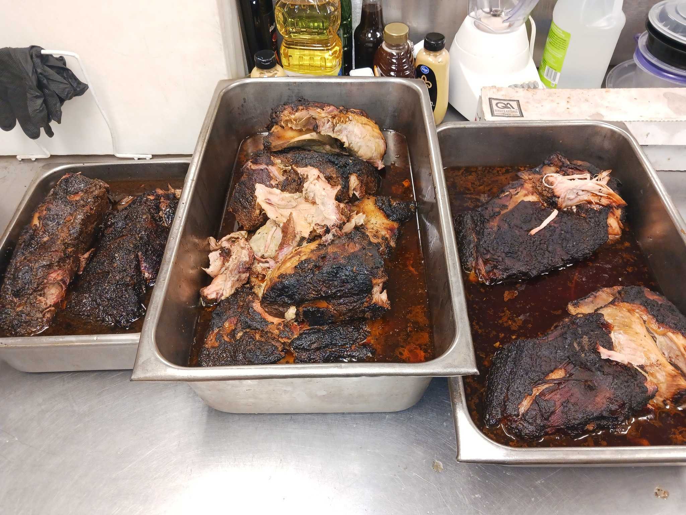
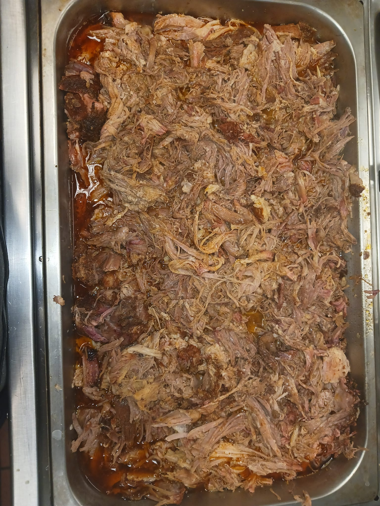

Smoked Pulled Pork


Description:
This simple yet delicious recipe uses old school smoking techniques with a modern twist to achieve the perfect pulled pork
Great for bbq sandwhiches, tacos, nachos or just in a pile on your plate!
Ingredients:
- 8-10 pound bone-in pork shoulder aka Boston Butt
- 2-3 Tablespoons of mustard (I prefer Dijon but yellow will also work)
- Kosher Salt
- Apple Juice
- Apple Cider Vinegar
- My All Purpose BBQ Rub
- Time and Patience
Steps:
- Preheat your smoker to 225-250 degrees F. I prefer a hickory/apple wood mix for pulled pork but feel free to use your favorite flavor
- While smoker is preheating, apply a generous amount of kosher salt to the entire outside of the pork shoulder. Let it sit at room temperature for 20 minutes
- Slather in your mustard of choice. Don't forget the gloves!
- Liberally coat the pork shoulder in your rub
- Once pork shoulder is prepped, place directly on smoker grates, fat cap facing up. Close the lid and smoke for 6-8 hours (or until a bark has formed and the internal temperature reaches 180 degrees F)
- Spritz with an apple juice/apple cider mix once every hour or so to prevent the shoulder from drying out
- When pork reaches previously mentioned thresholds, remove from the smoker.
- Preheat your oven or slow cooker to 350 degrees F. Add the shoulder to a roasting pan with 2 cups of apple juice and 1 cup of apple cider vinegar
- Cover with aluminum foil and roast until internal temperature reaches 205 degrees F
- Remove from oven, let it rest for an hour. DO NOT DISTURB THIS PROCESS. It allows the moisture to evenly redistribute throughout the shoulder
- Pull and Enjoy!